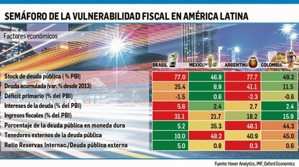

Real Chubut - Agencia de Noticias


Argentina es, fiscalmente, la más vulnerable de la región

LA CONSULTORA INTERNACIONAL OXFORD ECONOMICS EVALUÓ A LOS CUATRO GRANDES DE LATINOAMÉRICA - Cualquiera que triunfe en las elecciones de octubre deberá renegociar el acuerdo con el FMI en 2021. Allí surgen tres caminos: mantener el ajuste y crecer poco, reestructurar la deuda o patear el tablero.
La lupa de analistas e inversores internacionales se ha posado sobre las cuentas fiscales de la región, en particular, de las principales cuatro economías: Brasil, México, Colombia y Argentina. Días atrás la influyente consultora internacional Oxford Economics difundió un informe que pone paños fríos sobre los casos mexicano y colombiano pero alerta sobre los desafíos en Brasil (pese a la reforma previsional) y, sobre todo, en Argentina, "donde un ajuste en medio de una recesión puede ser una combinación tóxica para un presidente que busca la reelección".
Antes de entrar de lleno en el caso argentino, a modo de resumen, el diagnóstico de Oxford Economics destaca que Brasil tuvo el mayor déficit fiscal entre las economías clave de la región en 2018, seguida por Argentina. Y, si bien ambos países tienen importantes déficits primarios, los pagos de intereses de Brasil son uno de los más altos del mundo. Sin embargo, el caso de Argentina es preocupante porque enfrentará el desafío de pasar a un superávit primario en medio de una elección presidencial. Los casos de Colombia y de México son menos alarmante, de los que se cree. Pero en pocas líneas ven que:
Argentina es, por mucho, el país fiscalmente más vulnerable de la región. Porque a pesar de que los desequilibrios macroeconómicos internos y externos se están corrigiendo con éxito, el país tendrá que enfrentarse al desafío permanente de tener un elevado stock de deuda externa pública. Cualquiera que gane las elecciones este año, probablemente negociará un segundo paquete con el FMI en 2021, cuando habrá que tomar una decisión difícil: comprometerse con la austeridad permanente y un menor crecimiento, reestructurarse o patear el tablero.
Brasil la tiene más sencilla pero su enorme stock de deuda (77% del PBI) le impone un elevado costo financiero que continuará aumentando hasta que comience a generar un superávit primario decente. La nueva administración deberá modificar la constitución una o dos veces para generar ahorros significativos.
En México, el presidente López Obrador (AMLO) puede alcanzar los superávit primarios prometidos, pero Pemex puede requerir más inyecciones de capital del Tesoro si AMLO decide adherirse a su política energética. Sin embargo, la posibilidad de que México o Pemex pierdan su calificación de investment grade es una posibilidad muy remota.
Es probable que Colombia rompa su regla fiscal, ya que la división política pone fuera de su alcance una reforma fiscal significativa. Pero incluso con un déficit del 0,4% del PBI con respecto a los objetivos de déficit para 2022, la deuda con respecto al PBI aún se espera que disminuya desde el 49% de 2018. A pesar que el 8% de los ingresos dependen del petróleo, un shock petrolero no sería un golpe muy fuerte y desestabilizador para la deuda gracias a las reformas fiscales aprobabas en 2016 y 2018.
Veamos ahora lo más relevante del análisis del caso criollo.
Argentina está sufriendo un severo ajuste macroeconómico que ha llevado a la economía a una profunda recesión. Hasta abril de 2018, el Gobierno no solo tenía un enorme déficit fiscal, alcanzando el 6% del PBI en 2017, sino que también lo financiaba con flujos de cartera volátiles. Emitiendo deuda externa, apenas dos semanas antes del inicio de la crisis monetaria en 2018, se advertía que el gradualismo del presidente Macri se estaba desbaratando y que su incapacidad para reducir el déficit hacía de Argentina uno de los mercados emergentes más vulnerables.
Tras una severa crisis monetaria que obligó a las autoridades a solicitar asistencia financiera del FMI debió renovar completamente el marco de la política monetaria para estabilizar la moneda y recuperar el control de la inflación. Las políticas monetarias y fiscales más restrictivas y una severa reducción en el poder de compra de los argentinos (debido a la aceleración de la inflación) causaron una contracción del PBI estimada en 2.68% en 2018, lo que probablemente será seguido por otra caída de 1,6% este año (la recesión finalizará en el segundo trimestre).
Esta gran depreciación y la consiguiente recesión han llevado a una reducción de los desequilibrios externos del país a través de un menor consumo e importaciones, lo que reduce la probabilidad de una segunda crisis consecutiva.La buena noticia es que el déficit externo ahora se está reduciendo rápidamente; el malo es que lo está haciendo a costa de menores importaciones, lo que implica un menor consumo e inversión. El personal del FMI sabe que sus proyecciones de deuda originales son poco probable que se materialicen. Además, el FMI asume que la dura austeridad está aquí para quedarse, algo que es poco probable que sea políticamente factible en la Argentina.
Argentina tiene que lidiar con una serie de problemas acuciantes asociados con sus desequilibrios económicos. Con más de la mitad del gasto público indexado a la inflación, el ajuste continuará dependiendo principalmente de los recortes en el gasto de capital. Esto puede aliviar las restricciones de financiamiento temporalmente, pero no se cree que conduzca a una reducción sostenible del déficit. El resto de los recortes serán en gran parte a los subsidios a la energía, que plantean riesgos políticos importantes antes de las elecciones de octubre, ya que afectan directamente los presupuestos de los hogares. Si la estrategia de ajuste no se cumple, podría haber algunas sorpresas negativas para los inversores el próximo año.
El desafío inmediato de las autoridades es mantener su compromiso de reducir el déficit fiscal primario del 2,6% en 2018 a cero este año y, al mismo tiempo, evitar una reacción popular que podría impulsar a la expresidenta Cristina de Kirchner a la presidencia en las elecciones de octubre.
Una reducción adicional del déficit del 2,6% en medio de una profunda recesión puede parecer la receta perfecta para perder una elección presidencial, sin embargo, queda el truco fiscal gravar aún más a las exportaciones.
El FMI está actualmente proporcionando toda la financiación que el Gobierno necesita, aunque la historia será diferente para 2020, ya que la mayoría de los fondos del programa ya se habrán utilizado. Y no solo el déficit fiscal se está reduciendo rápidamente: estimamos que el déficit de la cuenta corriente se reducirá en dos tercios a u$s11.600 millones este año a 2,3% del PBI.
Pero incluso si, en términos de flujos, las cosas avanzan, la Argentina enfrentará inevitablemente problemas relacionados con su gran deuda pública, que puede llegar al 80% del PBI a fines de 2018 (el FMI esperaba que caería por debajo del 60% para 2023).
Un impulso de austeridad tan prolongado y severo no será políticamente factible en Argentina. Con excedentes primarios mucho más modestos (menores al 0,5% del PBI), es poco probable que la relación Deuda/ PBI caiga por debajo del 70% en los próximos cinco años.
Revertir una deuda tan grande será un desafío para un país volátil como Argentina. Por lo tanto, se cree que el escenario más probable es que quien sea elegido Presidente este año negocie un segundo programa del FMI en 2021. La elección será una decisión difícil: comprometerse con la austeridad permanente y un menor crecimiento para reducir la relación Deuda/PBI, reestructurar la deuda o patear el tablero. La última opción perpetuaría la vulnerabilidad y probablemente terminaría en una reestructuración cuando llegue la próxima crisis.
Fuente: Ambito